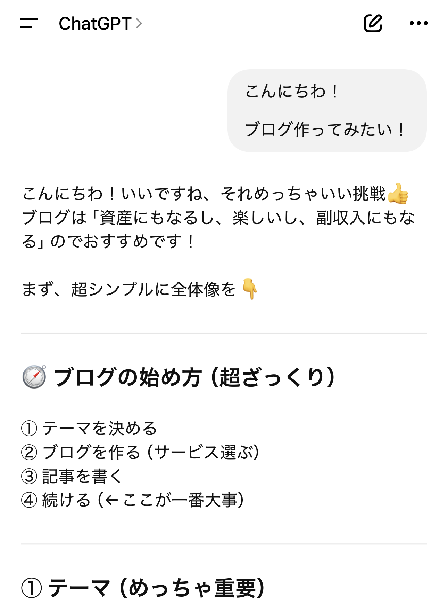
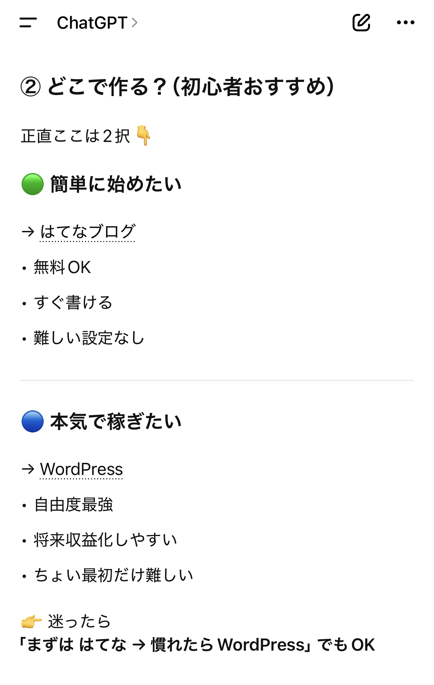

自己紹介
筆者はゲームを作る大学から、全く関係ない仕事に就いている30代男性、制作に興味があるが、知識を1からつけるには、あまりに社畜な為、興味があることをchat GPTさん（媚）に作ってもらおうと企画している。chat GPTさん のことはチャッピーと読んでいる。
chatGPT（チャッピー）とブログ作成してみた！
筆者はゲームを作る大学から、全く関係ない仕事に就いている30代男性、制作に興味があるが、知識を1からつけるには、あまりに社畜な為、興味があることをchat GPTさん（媚）に作ってもらおうと企画している。chat GPTさん のことはチャッピーと読んでいる。
実際に無知識でAIとブログ作成を初める過程を綴っていけたらと考えている。将来的には収益化とかもしてみたいが、AIと実際作る過程を日記感覚で記していきたいと考えている。

あいさつは大事ですよね！なかなか社会に出るとあいさつしても帰っこないこともありますよね！（底辺社畜）チャッピーは優しい

初心者でも始めやすいが有料なものと、初心者にはハードルが高いが無料なものなど、他の界隈でもよくあるやつですな